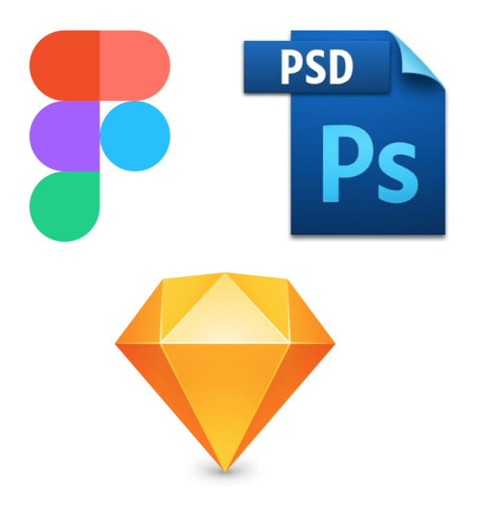
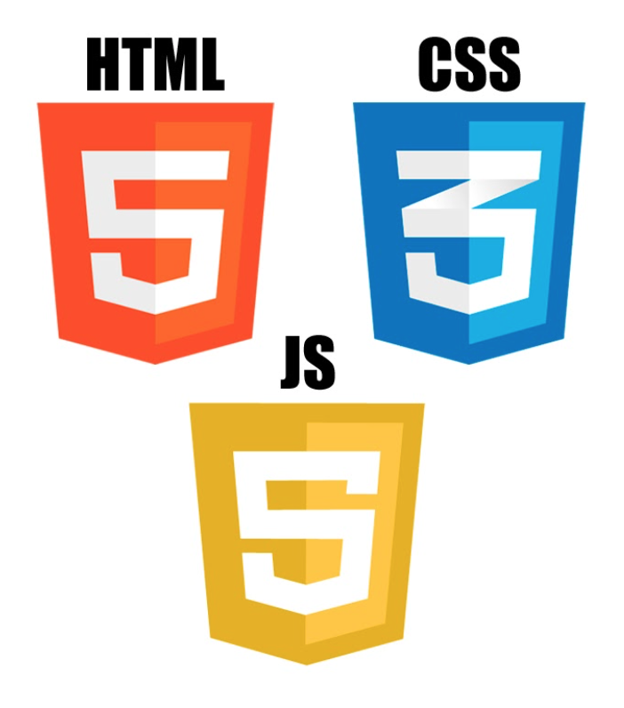
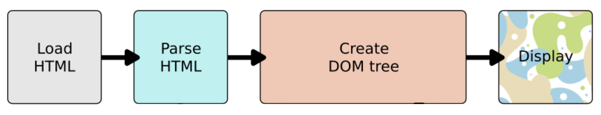
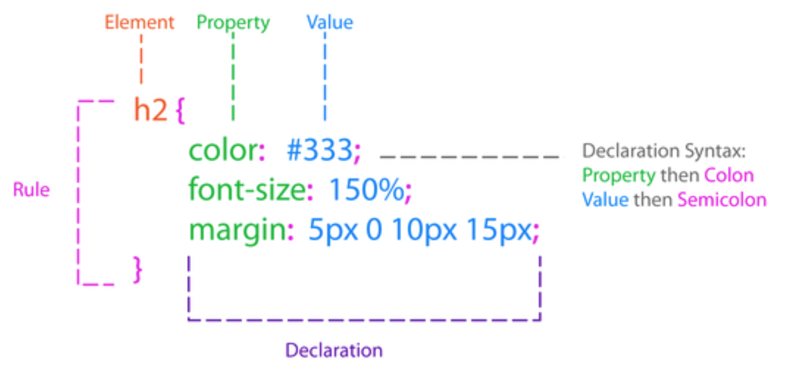
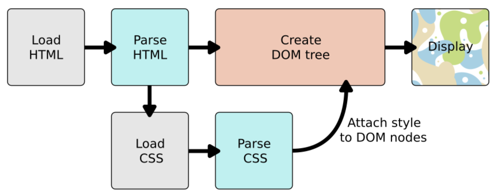
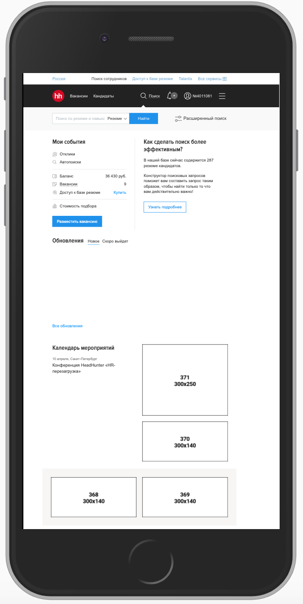
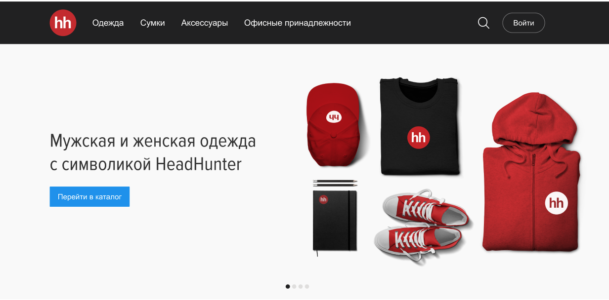

Организационные моменты
🔇 Отключите микрофоны
🔉 Не забывайте включать микрофон, когда задаете вопрос
😉 Включайте видео-камеры
⏺ Включить запись
❓Задавайте вопросы
Не бывает глупых вопросов.
Самый глупый вопрос – тот, который не задан.
© Джейсон Стетхем
- Леонид Феськов
- Тимлид в продуктовой команде hh.ru
- Занимаюсь web-разработкой с 2011 года

План (он у нас есть и мы будем его придерживаться)
-
Лекция
- HTML
-
СSS
- CSS-свойства
- БЭМ
- Адаптивная верстка
- CSS-препроцессоры
- Практика – часть 1
- Практика – часть 2
- Домашнее задание
Верстка web-страниц

➡️

Почему верстка важна
- Это то, что увидят пользователи
- Это основа интерфейсов
- Это то, с чем будете работать вы и ваши коллеги
HTML
(HyperText Markup Language)
HTML
(HyperText Markup Language)
— стандартизированный язык разметки документов, который определяет, как и какие элементы должны располагаться на веб-странице.
был разработан британским учёным Тимом Бернерсом-Ли приблизительно в 1986—1991 годах
Схема работы браузера

DOM (Document Object Model)

Инспектор HTML
- Правой кнопкой ➡️ Inspect Element / Просмотреть код
- Mac ➡️
Cmd + Alt + I или F12
- Windows, Ubuntu ➡️
Ctrl + Shift + I или F12

HTML теги
- Строчные
- Блочные
- Строчно-блочные
Особенности разных типов тегов
-
Строчные теги располагаются рядом на одной строке.
Блочные теги располагаются друг под другом.
-
Разная модель визуального форматирования CSS
-
Нельзя вкладывать блочные теги в строчные
Рекомендации по написанию HTML
- Указывайте doctype
- Пишите валидный HTML-код (validator.w3.org)
- Следуйте стайлгайду (например Google HTML Style Guide)
- Используйте теги по назначению
- Учитывайте доступность интерфейсов
CSS
(Cascading Style Sheets)
Разделение структуры и внешнего вида

Преимущества
- Простота последующего изменения дизайна
- Несколько дизайнов страницы с одним и тем же HTML-кодом
-
Уменьшение времени загрузки страниц сайта
- кода становится меньше
- кэширование CSS-файлов в браузере
- Дополнительные возможности стилизации страниц, которых не было в HTML
CSS
(Cascading Style Sheets)
— язык таблиц стилей, который позволяет прикреплять стиль к структурированным документам (например, документам HTML и приложениям XML)
Синтаксис CSS-правила

Схема работы браузера

Типы селекторов
- Базовые селекторы
- Комбинаторы
- Псевдоклассы
- Псевдоэлементы
Наследуемые стили:
color, font, letter-spacing, line-height, list-style, text-align, text-indent, text-transform, visibility, white-space и word-spacing
Ненаследуемые стили:
background, border, display, float и clear, height и width, margin, min-max-height и -width, outline, overflow, padding, position, text-decoration, vertical-align и z-index
Расчет специфичность
| Селектор |
Специфичность |
| тег, псевдо-элемент(span, ::after) |
0 0 0 1 |
| класс, псевдокласс, атрибут (.header, :hover) |
0 0 1 0 |
| идентификатор (#footer) |
0 1 0 0 |
| инлайн-стили (style="color: red;") |
1 0 0 0 |
!important
| Селектор |
Специфичность |
| тег, псевдо-элемент (span, ::after) |
0 0 0 1 0 0 0 1 |
| класс, псевдокласс, атрибут (.header, :hover) |
0 0 1 0 0 0 1 0 |
| идентификатор (#footer) |
0 1 0 0 0 1 0 0 |
| инлайн-стили (style="color: red;") |
1 0 0 0 1 0 0 0 |
.text #name div.red.small { ... }

Проблемы
.text #name div.red.small { ... }
- сложно понимать
- сложно переиспользовать
- сложно переопределить
- усложняет поиск селекторов браузерами
- лишние селекторы
Решение
-
Используйте только селекторы классов
.text #name div.red.small { ... } ->
.footnote { ... }
- Повышайте специфичность в крайнем случае
- БЭМ методология
Блок
- Функционально независимый компонент страницы
-
Название – английское слово или словосочетание
.header, .logo, .main-menu
-
Название характеризует смысл, а не состояние
.red-text
.error
- Можно вкладывать друг в друга
Элемент
- Составная часть блока, которая не может использоваться без него
-
Название соответствует схеме
.имя-блока__имя-элемента, например
.main-menu__item
- Имя элемента характеризует смысл, а не состояние
- Элементы можно вкладывать друг в друга.
-
Элемент всегда часть блока, а не другого элемента
.block__elem1__elem2
.block__elem1 и .block__elem2
Модификатор
- Определяет внешний вид, состояние или поведение блока или элемента
-
Название соответствует схеме
.имя-блока_имя-модификатора или
.имя-блока__имя-элемента_имя-модификатора
.main-menu__item_active
- Имя модификатора характеризует внешний вид
- Нельзя использовать самостоятельно
Правила именования CSS-классов
-
Блок
.block-name
-
Элемент
.block-name__element-name
-
Модификатор
.block-name_mod-name
.block-name__element-name_mod-name
Преимущества
- Не повышается специфичность селекторов
- Блоки легко переиспользовать
- Легко масштабировать верстку
Position
- static (по умолчанию)
- relative
- absolute
- fixed
- sticky
Flexbox Для самостоятельноего изучения. Разберем на практике



Media queries
– CSS правила, которые позволяют применять разные CSS-стили, для разных устройств по типу отображения (например: для принтера или монитора), или для конкретных характеристик устройства (например: ширины окна просмотра, ориентация устройства)
@media screen and (max-width: 480px) {
.block {
background-color: #2196f3;
color: #fff;
}
...
}
Пример адаптивной верстки
Breakpoints

Реализация адаптивной верстки
.header {
...
}
.promo-carousel {
...
}
Реализация даптивной верстки
@media (min-width: 480px){
.header {
...
}
.promo-carousel {
...
}
}
Реализация даптивной верстки

@media (min-width: 1000px) { ... }
Проблемы CSS
- Нет переменных (уже есть, но не работают в IE)
- Нет функций
- На CSS нельзя программировать
CSS-препроцессор
– это надстройка над CSS, которая добавляет ранее недоступные возможности для CSS, с помощью новых синтаксических конструкций.
Как это работает

➡️

Использование less
-
<link rel="stylesheet/less" type="text/css" href="styles.less" />
<script src="//cdn.jsdelivr.net/npm/less" ></script>
-
npm install -g less
lessc styles.less styles.css
-
настроить компиляцию less в webpack, gulp, parcel или др.
Рекомендации по CSS
- Придерживайтесь стайлгайда (например Google CSS Style Guide)
- Используйте селекторы классов
- Именуйте классы по смыслу, а не по значению
- Не повышайте специфичность селекторов без надобности
- Старайтесь не использовать непонятные сокращения
- Учитывайте переполнение/недополнение контентом
- Не пишите лишние свойства